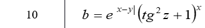

<!DOCTYPE html>
<html lang="en">
<head>
    <meta charset="UTF-8">
    <meta name="viewport" content="width=device-width, initial-scale=1.0">
    <meta http-equiv="X-UA-Compatible" content="ie=edge">
    <title>Коркуц Стас</title>
    <script>
        document.write('В соответствии с вариантом необходимо написать скрипт для вычисления значения переменной b. Исходные данные вводятся с использованием метода prompt. При выводе информации предусмотреть форматирование документа, вывод текста задания, включая рисунок исходного выражения, и вывод информации о разработчике скрипта. ');
        var x=prompt('Введите x');
        var y=prompt('Введите y');
        var z=prompt('Введите z');
        document.write('<br>');
        document.write('<br>x = ',x,' y = ',y,' z = ',z,' b = ',Math.exp(Math.abs(x-y))*Math.pow((Math.tan(z)*Math.tan(z)+1),x));
    </script>    
</head>
<body>
</body>
</html>